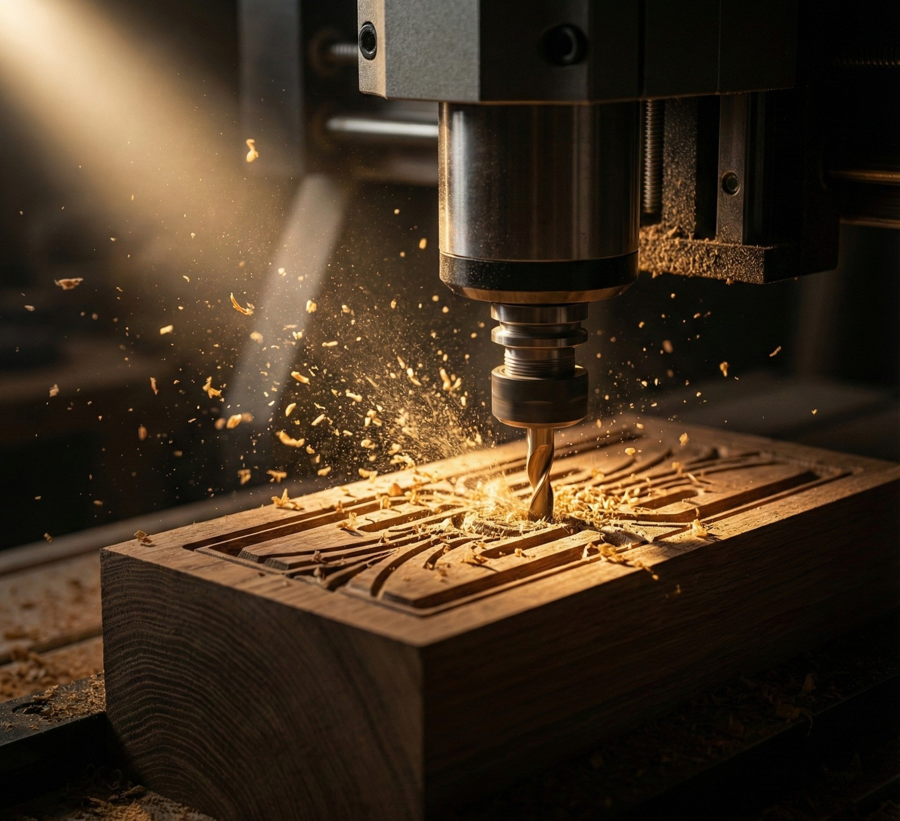

Manufactura CNC de Gran Formato
Mecanizado CNC a Medida. Desde el modelado 3D hasta la ejecución en el router, nos encargamos de que cada corte, grabado o vaciado cumpla con los estándares industriales más exigentes. Lo que lo hace ideal para: Mobiliario especializado, cartelería técnica y componentes industriales.
- Corte de maderas nativas y terciados.
- Mecanizado de polímeros y acrílicos.
- Grabados 2.5D de alta definición.
